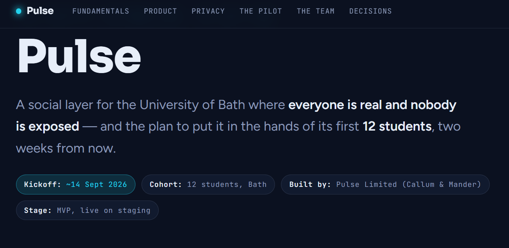

Pulse: Validating Student Connection Through a 12-Person Research Pilot
Pulse helps university students at Bath connect, chat, and meet up in person. Before a wider departmental trial, the team needed evidence — not founder intuition — that the concept actually worked. I'm leading the research proving (or disproving) it.
The 3-week pilot below is currently running. This case study will be updated with full findings once it concludes.

The problem
Would students actually use Pulse to make real connections, or would it become another dormant social app? A founder reporting on their own app isn't credible evidence — the research needed to be independent enough that a university stakeholder could trust the findings.
I'm leading the research across two phases: an initial round of usability and assumption testing to validate the concept before wider rollout, followed by a 3-week pilot currently underway to measure real-world engagement. I designed both studies and am reporting findings directly to the university.
Produce evidence independent and rigorous enough for a university stakeholder to trust, not just founder intuition.
Owned research and evidence end-to-end: study design, interviewing, pilot design, synthesis, and stakeholder reporting.
Phase 1 complete. Phase 2 (3-week engagement pilot) currently in progress.
Phase 1: Initial user testing
Before the pilot, I ran a round of one-on-one user testing to check two things at once: whether the app was usable, and whether the team's core assumptions about the product actually held up. I wrote the interview questions; the founder and I co-conducted the interviews.
What I tested
Whether students could navigate intuitively — could they work out what to click and move through the core journey without guidance?
Whether students would actually want to use an app like this at all.
Reactions to icebreaker questions and in-app games, plus willingness to reveal identity to another user — a key trust/safety assumption behind the app's design.
What Phase 1 told us
Confirmed students would use the app, but revealed issues with the onboarding tutorial and the size of the profile icon. It also raised questions about the validity of the check-in question, while indicating that participants enjoyed the Geopulse mini-game.
Framing the pilot
Phase 1 validated the concept but couldn't answer the real question: would students keep using Pulse, and would it lead to genuine connections. That question could only be answered by watching real usage over time.
12 Bath University students, recruited for a 3-week engagement pilot.
Designed for low-risk participation via a control group, plus one-tap account deletion.
Evidence had to be independent enough for a university stakeholder to trust, not just self-reported founder wins.
Choosing how to measure
For both phases of study design, we chose to measure key metrics through actual engagement with the app — captured via the admin dashboard — rather than relying solely on self-reported behaviour. What people say they'll do and how they actually behave is often different.
Method mix
Landed on a combination of usage and behavioural tracking, mid-pilot check-in surveys and Q&A, and exit interviews — so quantitative signal (do they open it, do they come back) would always be checked against qualitative context (why).
The pilot in execution
12 Bath University students, running for 3 weeks. I built the feedback capture approach, including mid-pilot pulse-checks, and am synthesising data from both phases to report to the university.
What I'm measuring
Frequency of app opens, number of connections made, number of reveals, drop-off points, return rate, length of engagement, length of interaction before a reveal, and qualitative sentiment.
Mid-pilot pulse-checks
Used to build momentum by proactively initiating participant feedback and asking for suggestions to improve the app technically, in usability, and creatively — rather than waiting until the exit interview to hear what wasn't working.
Validating as the pilot runs
The pilot is itself the test — but I'm treating verification as ongoing rather than a single event at the end. Behavioural data from the admin dashboard is cross-checked against what participants say in mid-pilot check-ins, so a metric like "return rate" is never read in isolation from the reasons behind it.
App-open frequency, connections, reveals, and drop-off points, pulled directly from the admin dashboard.
Surveys and Q&A partway through, surfacing friction before it silently causes drop-off.
Closing qualitative pass once each participant's 3 weeks are complete.
Results & next steps
The 3-week pilot is currently in progress. Synthesis of the full findings — engagement rates, connection outcomes, and qualitative sentiment — is planned once it concludes, and will be presented directly to the university stakeholder.
This case study will be updated with those findings and impact once the pilot wraps.